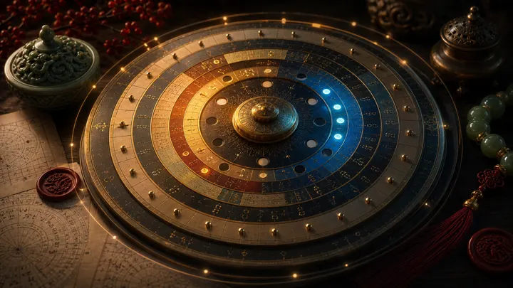
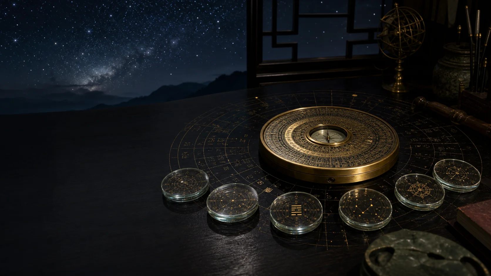
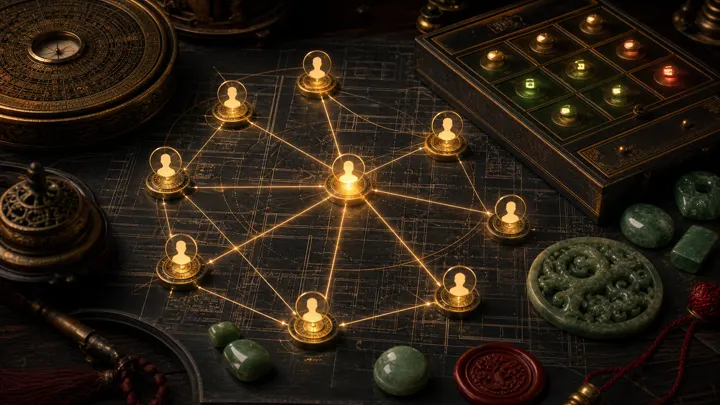
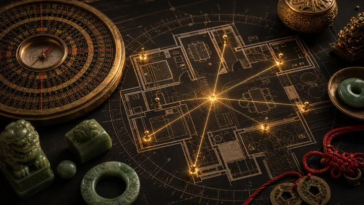

เริ่มจากเรื่องที่ต้องตัดสินใจ
เลือกทางเข้าให้ตรงกับคำถาม ระบบจะดึงข้อมูลดวง เวลา ทิศ และบริบทที่เกี่ยวข้องไปให้ AI Sifu เอง
ถาม AI Sifu
ถามคำถามเฉพาะเรื่อง แล้วรับคำตอบที่อ้างอิงดวง เวลา ทิศ และบริบทของคุณ

Todayดูวันนี้
ดูว่าวันนี้เหมาะกับงานแบบไหน ควรใช้จังหวะไหน และควรเลี่ยงอะไร
วางฤกษ์
เลือกวันและช่วงเวลาที่สัมพันธ์กับงานสำคัญและดวงเจ้าของเรื่อง
Luopan บ้านและทิศ
อ่านทิศ บ้าน ห้อง ประตู โต๊ะ เตียง และจุดพลังในพื้นที่จริง
คนรอบตัว
อ่านแรงหนุน แรงปะทะ และความเหมาะสมในการร่วมงานจากดวงสัมพันธ์
คำถามเดียว ต้องได้คำตอบที่เอาไปใช้ได้
อ่านว่าองศานั้นตกภูเขาใด วังใด ธาตุใด และสัมพันธ์กับดวงเจ้าของบ้านอย่างไร
บอกว่าดาว/ธาตุไหนช่วย จุดไหนต้องระวัง และอะไรคือเงื่อนไขที่ทำให้ใช้ได้จริง
แนะนำเวลา สี วัสดุ ตำแหน่ง การใช้งาน และข้อควรเลี่ยงตามบริบทจริง
คุยต่อจากคำตอบเดิมโดยไม่ต้องเล่าดวงใหม่ เพราะบริบทถูกผูกไว้กับ profile และพื้นที่จริง
6 ศาสตร์ Fusion · ฟ้าเดียวกัน คนละภาษา
จีน อินเดีย กรีก และศาสตร์โบราณหลายสายไม่ได้เริ่มจากตำราเดียวกัน แต่เริ่มจากฟ้าเดียวกัน: เวลา ฤดูกาล ทิศ วงกลม 360° จังหวะดาว และความสัมพันธ์ของมุม
Hourkey ให้แต่ละศาสตร์อ่านด้วยภาษาของตัวเอง แล้วให้ AI Sifu รวมหลักฐานเป็นคำตอบเดียว พร้อมบอกว่าชั้นไหนเห็นตรงกัน ชั้นไหนเตือนต่างกัน และควรตัดสินใจอย่างไร

ทุกเครื่องมืออ่านจากบริบทชุดเดียวกัน
โปรไฟล์ดวง เวลา ทิศ และคำถามของคุณถูกใช้ร่วมกันในแต่ละหน้า ทำให้ Chart, Timing, Luopan และ AI Sifu ไม่แยกกันเป็นคนละเรื่อง
โครงสร้างดวง ธาตุที่เป็นยา ธาตุที่ควรเลี่ยง และวัยจร
จังหวะรายวัน ชั่วโมงดี ทิศหนุน และกิจที่เหมาะกับดวงคุณ
ดูวันทั้งเดือน พร้อมคะแนนและเหตุผลที่อ่านออกง่าย
อ่านสถานการณ์เฉพาะหน้า ทิศ ประตู ดาว เทพ และวังที่ใช้ได้
รวมรายงานดวงเชิงลึกสำหรับอ่านเป็นเล่มและเก็บอ้างอิง
เลือกฤกษ์ให้ตรงกับงานสำคัญและดวงเจ้าของงาน
องศาทิศจริง วงแหวนหล่อแก ดาวเหิน และ pin ในแปลน
ถามต่อจากข้อมูลจริง ไม่ใช่ chatbot ทั่วไปที่ตอบจาก prompt ลอย ๆ
ถ่ายฝ่ามือสองข้าง AI อ่านเส้นตามคัมภีร์ 3 อารยธรรม จีน อินเดีย ตะวันตก แล้วหลอมรวมกับดวง
จากข้อมูลส่วนตัว ไปจนถึงคำแนะนำที่ลงมือได้
ยิ่งบริบทครบ คำตอบยิ่งเฉพาะตัว: วันเกิด เวลาเกิด สถานที่เกิด ความสัมพันธ์ งานที่ถาม และพื้นที่จริง
ใส่วัน เวลา และสถานที่เกิด
ระบบคำนวณด้วยเวลาสุริยะจริง แล้วสร้างโครงสร้างดวง ยงเสิน ธาตุหนุน และธาตุที่ควรระวัง
เลือกเรื่องที่อยากถาม
เมื่อถามเรื่องฤกษ์ ทิศ บ้าน หรือคนรอบตัว ระบบจะเพิ่มข้อมูลเฉพาะหน้าก่อนส่งเข้า AI Sifu
ได้คำตอบพร้อมเหตุผล
ถ้าข้อมูลบางชั้นยังไม่ครบ ระบบจะบอกข้อจำกัดของคำตอบ ไม่สรุปเกินกว่าข้อมูลที่มี
หลายศาสตร์ แต่ต้องกลายเป็นคำตอบเดียว
AI Sifu อ่านจากข้อมูลที่ระบบคำนวณไว้ ไม่ใช่แค่คำสวย ๆ จากโมเดลภาษา
อ่านโครงสร้างดวง ธาตุที่หนุน ธาตุที่ควรระวัง วัยจร และปีจร เพื่อเข้าใจพื้นฐานของเจ้าของดวง

ประตู ดาว เทพ วัง ทิศ และจังหวะเฉพาะคำถามที่ต้องตัดสินใจตอนนี้

อ่าน 24 ภูเขา ดาวเหิน ยุค องศาเข็ม ทิศบ้าน และตำแหน่งสำคัญในแปลนจริง
วัน ชั่วโมง กิจที่เหมาะ ข้อควรเลี่ยง และการจับฤกษ์ตามบริบทผู้ใช้
สร้างมาเพื่อคำถามที่มีผลกับชีวิตจริง
เริ่มจากคำถามก่อน แล้วค่อยเลือกเครื่องมือที่ต้องใช้
Hourkey เหมาะกับทั้งคนที่อยากถาม AI Sifu เป็นครั้งคราว และคนที่ต้องใช้ฤกษ์ ทิศ หรือรายงานดวงหลายชั้นเป็นประจำ
สิ่งที่ควรรู้ก่อนเริ่ม
คำถามที่เจอบ่อย
ไม่จำเป็น เลือกเรื่องที่อยากถามได้เลย ระบบจะแปลงข้อมูลเชิงเทคนิคเป็นภาษาที่ใช้ตัดสินใจได้
คำตอบผูกกับข้อมูลดวง เวลา ทิศ และโปรไฟล์ของคุณ ไม่ใช่การถามแบบไม่มีบริบท
ได้ หน้า Luopan อ่านองศาจริงและส่งข้อมูลทิศเข้าบริบท AI Sifu เพื่อวิเคราะห์ต่อ
เริ่มได้ แต่คำตอบบางส่วนจะกว้างขึ้น ระบบจะบอกเมื่อข้อมูลบางชั้นยังไม่ครบ
Hourkey แสดงเหตุผลและชั้นข้อมูลที่ใช้ประกอบคำตอบ แต่ผลลัพธ์ควรใช้เป็นเครื่องมือช่วยคิด ไม่ใช่การรับประกันเหตุการณ์ในอนาคต
ข้อมูลโปรไฟล์และบริบทคำถามถูกใช้เพื่อคำนวณและสร้างคำตอบเฉพาะตัวในระบบ Hourkey
ให้ Hourkey อ่านบริบทก่อนตัดสินใจ
สร้างคำตอบจากวันเวลาเกิด ฤกษ์ ทิศ พื้นที่ และข้อมูลจริงของคำถามที่คุณกำลังตัดสินใจ